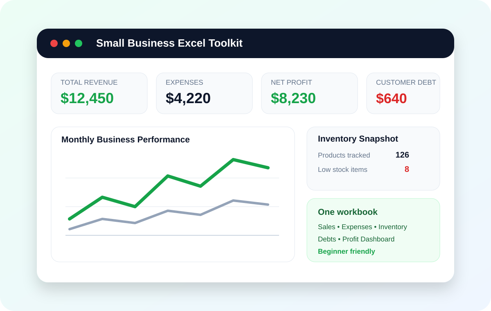

Run your business from one simple Excel toolkit.
Track sales, expenses, inventory, customer debts and profit without juggling separate spreadsheets or paying a monthly software fee.
Get Instant Access — $9.99See the Preview
Stop managing your business across scattered files.
The toolkit brings everyday business records together so you can see what is selling, what you are spending, what is in stock, who still owes you and whether the business is making money.
Sales Tracker
Record daily sales and keep revenue organized in one consistent place.
Expense Tracker
Log operating costs and understand what is reducing your profit.
Inventory Tracker
Monitor products, units on hand, stock value and low-stock items.
Customer Debt Tracker
Keep outstanding balances visible so unpaid amounts are easier to follow up.
Profit Dashboard
See revenue, expenses, profit and debt at a glance from one dashboard.
Beginner Friendly
Ready-made sections and formulas mean you do not need to build the workbook from scratch.
Know your numbers at a glance.
The dashboard is designed to give a quick picture of business performance while the underlying trackers keep the details organized.
- Revenue and expense summaries
- Net profit visibility
- Outstanding customer debt
- Inventory status and reorder awareness
- Monthly performance view
How it works
Record sales, expenses, products and customer balances in the relevant sections.
Use the same file as your regular business record-keeping tool.
See the key numbers together instead of calculating everything manually.
Small Business Excel Toolkit
No monthly software subscription. Get the complete workbook and start organizing your records.
Buy Now & DownloadView Product DetailsCheckout and file delivery are handled through Payhip.
Excel templates for different small-business needs
Small Business Bookkeeping Spreadsheet
Organize sales, expenses, stock and customer balances in one practical workbook.
Profit and Loss Tracker
Compare revenue and expenses and keep monthly profit visible.
Cash Flow Excel Template
Use sales, expenses and outstanding balances to maintain better cash visibility.
Shop Sales Tracker
Track daily shop sales together with expenses, customer debt and inventory.
Inventory and Sales Tracker
Connect product stock information with sales tracking in the same workbook.
Excel Business Dashboard
Review revenue, expenses, profit, inventory and customer debt from one summary.
Frequently asked questions
Do I need advanced Excel skills?
No. The workbook is designed to be beginner friendly and uses prepared sections and formulas.
Is this a subscription?
No. The toolkit is a one-time digital purchase for $9.99.
Who is it designed for?
Small shops, freelancers, service businesses, online sellers, startups and side hustles that want a simple Excel-based tracking system.
Does this replace an accountant?
No. It is a business record-keeping and tracking tool, not professional accounting, tax or financial advice.
One workbook. Clearer records. Better visibility.
Track sales, expenses, inventory, customer balances and profit from one practical Excel toolkit.
Buy the Toolkit — $9.99